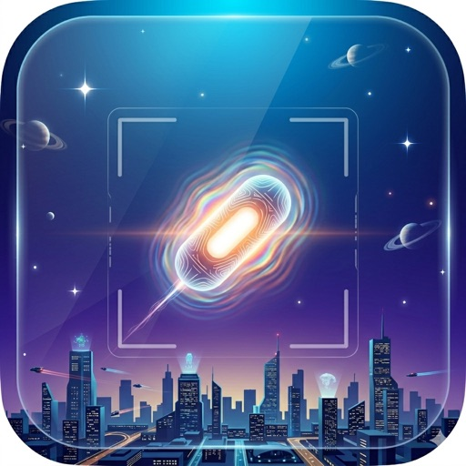

The sky is the canvas.
SkyFi runs Apple's neural sky segmentation locally on your iPhone and replaces the sky with cinematic sci-fi effects — UAP fleets, floating monoliths, Navy-FLIR-style B&W. Real foreground objects occlude everything automatically.
Download on the App Store Learn more
Four cinematic lenses
Chaotic Sky
Three neon-glowing UAPs drift across the sky, ringed by FLIR targeting brackets. Inspired by the Navy GIMBAL / Tic-Tac / GOFAST footage.
UFO Monolith
A real-time raymarched obsidian slab floats above the city, lit by a cyan fresnel edge glow. Foreground objects occlude its lower edges automatically.
Debug Sky Tint
Visualises the AI's sky mask in red. Useful for seeing exactly what the neural network classifies as sky in any scene.
Original Feed
Clean, unfiltered live camera — full 60 fps with all the smart features (FLIR toggle, aspect lock, recording) still active.
Why it's different
100% on-device
Every camera frame is processed by Apple's Core ML / Vision / Metal frameworks on your iPhone's Neural Engine and GPU. No frames are uploaded, stored on a server, or shared with any third party. Zero network code. Zero analytics. Zero accounts.
Real semantic AI, not a filter
SkyFi uses Apple's official DETR-ResNet50 semantic segmentation model, which understands 201 classes of real-world objects including sky. The lens effects only render where the AI says sky is — not on buildings, not on people, not on trees.
Honest about the sky
Point SkyFi at a wall or a ceiling and it tells you: NO SKY DETECTED. The lens effect respectfully turns off and gives you the unmodified camera feed back. No faked overlays where the AI can't actually find sky.
Record what you see
Tap the shutter to record 60 fps H.264 video with the lens effect baked in. Saved straight to your Photos library at the viewfinder's aspect ratio.
Requirements
- iPhone with iOS 16 or later.
- Apple Neural Engine recommended (iPhone XS or newer) for best performance.
- Roughly 50 MB on-disk including the bundled segmentation model.
Get SkyFi
Available on the App Store.
Questions? Visit support →